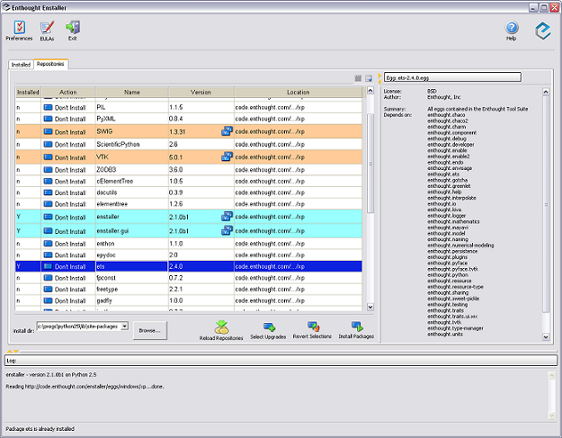
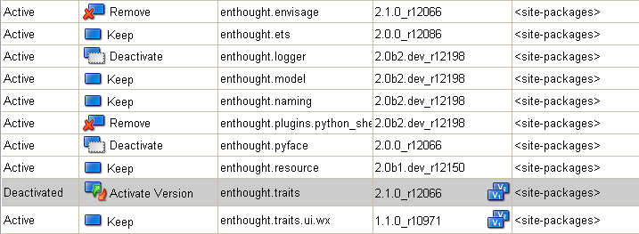

Enstaller code walk-through
summary of enthought.enstaller/docs/DESIGN.txt
Rick Ratzel
2007-08-07
ez_enstaller_setup.py
- Modeled after setuptool's ez_setup.py.
- "one-time" use for bootstrap installing the enstaller egg(s).
- Some duplication of code from Enstaller package.
- Needs -U option for upgrading Enstaller.
[any material that should appear in print but not on the slide]
bootstrapper.py
- Called from ez_enstaller_setup.py.
- Downloads and installs setuptools if necesary.
- Inherits from EasyInstaller.
- Used only for bootstrapping from ez_enstaller_setup.py.
[any material that should appear in print but not on the slide]
launcher.py
- Launcher class launches a standalone Enstaller app.
- Wraps a call to "main()" in an exception handler to provide "post mortem" files in the event of a crash.
- Provides the setuptools "console_scripts" entry point.
[any material that should appear in print but not on the slide]
main.py
- Sets up the appropriate Enstaller objects for a standalone session.
- Developers wishing to embed Enstaller might look here for an example.
- Processes command-line and uses those options to instantiate a Session object then either a CLI or GUI object based on options.
- The Session object is initialized here.
[any material that should appear in print but not on the slide]
session.py
- Session object is responsible for:
- installing
- removing
- activating
- deactivating
- finding/listing installed and repository packages
- HasTraits!
- Maintains the state of the session and environment Enstaller is working in.
[any material that should appear in print but not on the slide]
enstaller_engine.py
easy_installer.py
- EasyInstaller embeds the "main" of setuptools' easy_install entry point.
- Not (supposed to be) Enstaller-specific.
- Provides an easy-to-use API which can be extended.
- Engine extends EasyInstaller for Enstaller-specific features:
- remove
- post-install
- relocation
[any material that should appear in print but not on the slide]
Repository family of classes
repository_factory.py
- Maintain lists of Package objects
- Repository class: abstract base for all others.
- LocalRepository class: Repositories that are local on disk.
- Also used for maintaining installed packages.
- RemoteRepository class: not local, accesses through a series of http calls.
- PypiRepository class: Reads PyPI-style repositories which support either XMLRPC calls or have a specific heirarchy of pages.
- repository_factory contains create_repository(), which creates and returns the appropriate repository object based on the repo URL.
[any material that should appear in print but not on the slide]
package.py
- Maintains all information about a given package.
- Multiple versions of the same package result in multiple package objects.
- Instantiated within Repository objects.
- Several traits describing various attributes of a package.
[any material that should appear in print but not on the slide]
cli.py
- Command-line interface to an Enstaller Session.
- Instantiated from main().
- Based on command-line options:
- Calls the appropriate method on the session,
- Reads the result from the session,
- Formats the result into text to output to STDOUT.
[any material that should appear in print but not on the slide]
GUI class
- Make up the "main" view.
- Like the CLI, consists mainly of a Session object.
- Unlike CLI, adds button objects and ability to run several Session operations is a single session, in a background thread.

[any material that should appear in print but not on the slide]
PackageTable family of classes
PackageRow family of classes
- PackageTable and RepositoryPackageTable are the models for the tables of packages to display.
- package_table_view.py and package_table_columns.py contain the view and controller instances/classes.
- PackageRow, InstalledPackageRow, RepositoryPackageRow contain references to one or more Package objects.
- PackageRow classes (and the PackageTable handlers/controllers which operate on them) are fairly complex

[any material that should appear in print but not on the slide]
EULA Manager
Preference Manager
- eula_manager_gui.py and eula_manager_gui_view.py contain classes for displaying the EULA manager GUI.
- preference_manager_view.py and preference_views.py contain classes for displaying the Preference Manager GUI.
[any material that should appear in print but not on the slide]